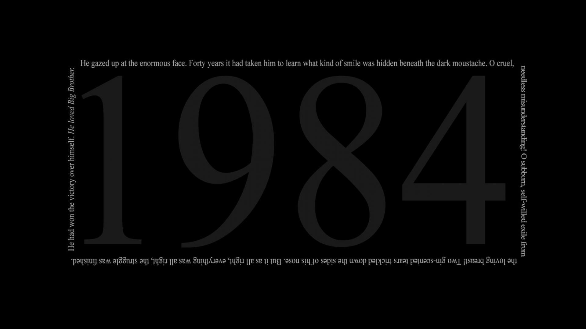
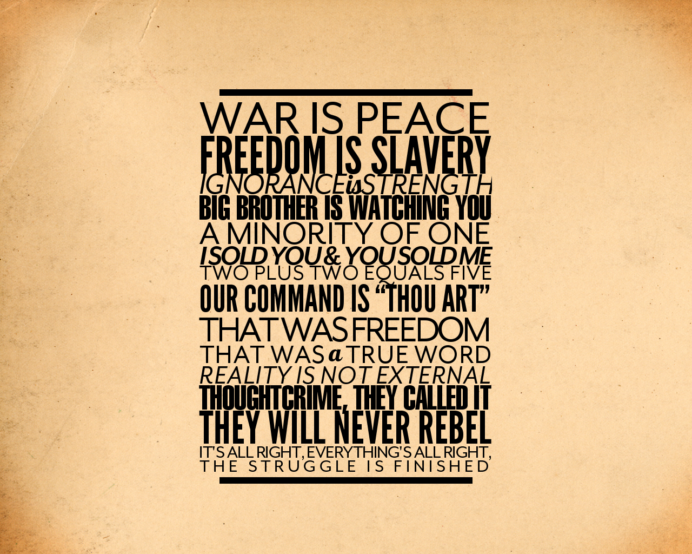

English Books
1984
Descrição do livro
A história se passa no ano de 1984, em um futuro distópico onde o Estado impõe um regime extremamente totalitário para a sociedade, através da vigilância do Grande Irmão, imposta pelo partido (Ingsoc), onde ninguém escapa do seu poder. Assim, o local do romance, Oceania, é dominado pelo medo e pela repressão, pois quem pensava contra o regime era acusado de cometer um crime (no livro, crimideia, ou crime de ideia, na tradução de novilíngua, idioma do futuro).
No romance, o persongem principal, que representa o contraponto ao regime, é Winston Smith. Logo ele começa a questionar o modo como age o Estado. Winston faz parte do Ministério da Verdade, tendo como função alterar dados para que toda a história, comunicado e documento estivesse de acordo com o que o partido pregava. A crimideia acontecia justamente quando alguma pessoa era denunciada por questionar esses documentos. A punição era aplicada pela Polícia do Pensamento, que eliminava a pessoa. “Crimideia não acarreta a morte: crimideia é a morte.”
↩ Ir para Home